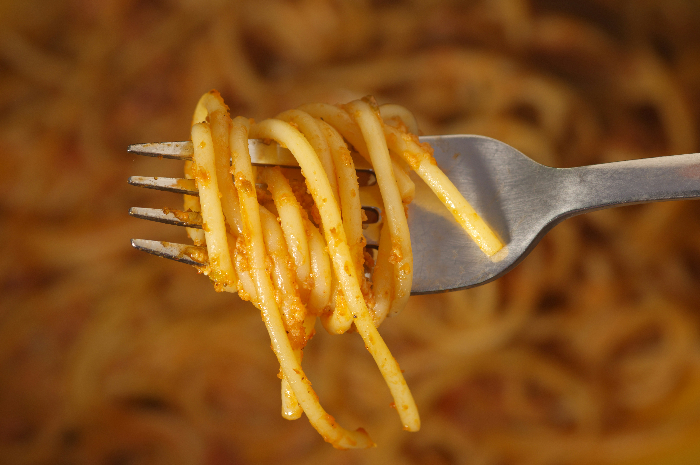

Spaghetti Aglio e Olio

Origin: Italy (Naples)
A simple pasta dish made with garlic (agilio) and olive oil(olio). It's known for
being delicious with minimal ingredients.
Ingredients:
- 200g spaghetti
- 4 cloves of garlic (sliced thin)
- 1/4 cup olive Oil
- 1 tsp red pepper flakes
- Salt (to taste)
- Fresh parsley
- Parmeson cheese
Steps:
- Cook spaghetti in salted boiling water al denate.
- Meanwhile, heat olive oil in a pan, add garlic slices, and cook until lightly golden.
- Add red pepper flakes.
- Drain pasta (save some water) and add to the pan. Toss well.
- Add pasta water if it looks dry. Mix in parsley.
- Serve with toasted bread or Salad.